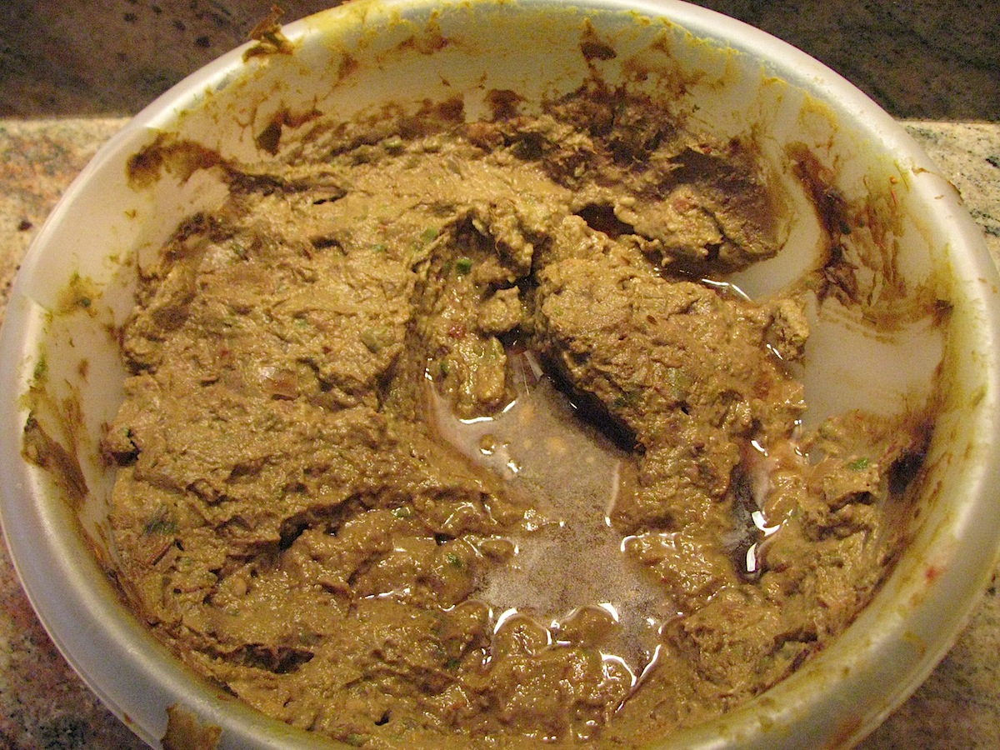

It Do Be Guacamole Sometimes

Description
Okay this recipe is for the whitest of the white people. You all really tellin' me you can't make a basic ass guacamole by yourself? You gotta google this shit?? Talk about embarrassing. Jesus. In any case, papi is here to rescue you from death by embrassment the next time you show up to watch a baseball game with your lame ass friends. This shit is basic as fuck but it absolutely slaps.
Ingredients
- avocados
- white onion
- tomatoes
- lime
- cilantro
- salt
Steps
- Continue to acknowledge the fact that you can't actually figure this out based on the list of ingredients I gave you above. Fuck. You're still reading?
- Okay, here we go. Dice the tomatoes and the onion into small pieces. Dice means chop it up really small, okay?
- Do the same with the cilantro. Fine chop. This one can be rougher.
- Throw all that in a bowl with some avocados.
- MASH IT UP. ADD THE LIME. THINK ABOUT WHY YOU ENDED UP ON THIS PAGE.
- Enjoy your guac.